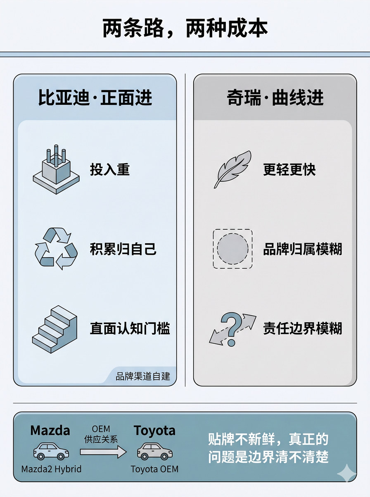
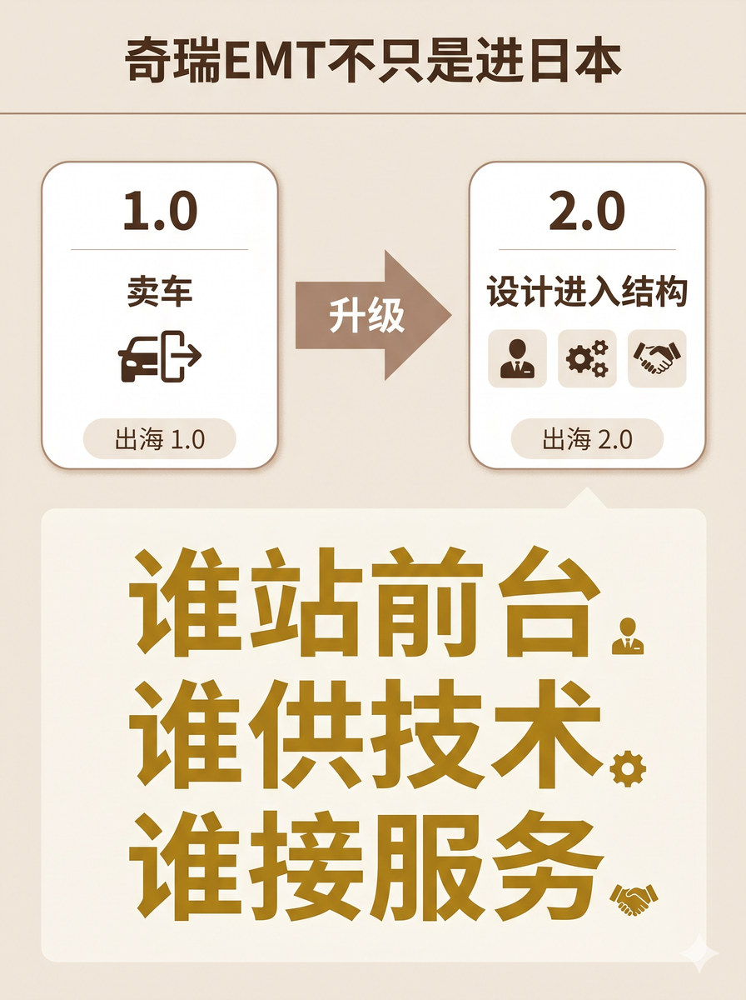
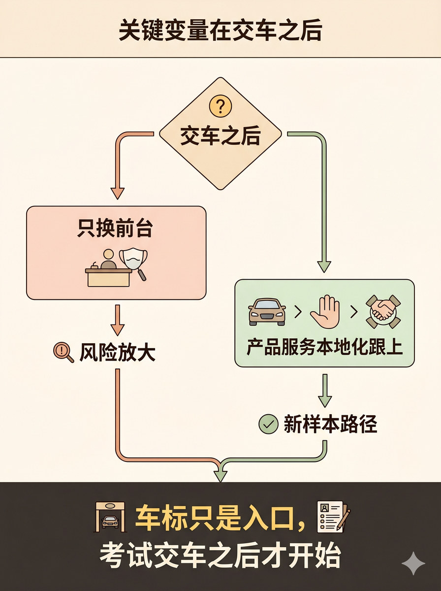

历史 Nano Banana 竖版短视频配图基线：对比正面进入与曲线进入的收益代价，上升到出海结构设计，并用交车后责任的条件分支收束。
# D3 分块段 07 最终执行 Prompt 生成一张 3:4 竖版静态配图。 整张图采用顶部标题 + 中部左右对照双栏卡片 + 底部通栏横条的三段式结构。 顶部放一个窄标题横条，标题文字为"两条路，两种成本"，标题清楚但不要过大，不要压过主体。 中部是核心对照区：左右各一张等大的圆角卡片，中间用一条垂直细线分割。 两张卡片底色不同——左侧卡片为蓝色系浅底色，右侧卡片为银灰色系浅底色，底色差异自然表达"两条路"的对照关系。 左侧卡片上方标注"比亚迪·正面进"。卡片内部依次排列三个图标加文字的组合： 一个建筑基础/钢筋图标配文字"投入重"； 一个内循环箭头图标配文字"积累归自己"； 一个台阶/门栏图标配文字"直面认知门槛"。 卡片右下角可补充轻标签"品牌渠道自建"。 右侧卡片上方标注"奇瑞·曲线进"。卡片内部依次排列三个图标加文字的组合： 一个羽毛/轻量图标配文字"更轻更快"； 一个虚线圈/边界虚线框图标配文字"品牌归属模糊"； 一个问号标记/模糊箭头图标配文字"责任边界模糊"。 两张卡片的关系：左右对照，视觉等重，中间垂直分割线明确边界，没有任何一方看起来是"正确答案"。 底部独立做一个通栏横条容器，底色与上部主体区明显区分。横条内部左侧展示"Mazda"到"Toyota"的从左到右 OEM 供应箭头关系，配小型汽车图标示意，文字标注"Mazda2 Hybrid"和"Toyota OEM"。横条右侧用较小字号展示收束句"贴牌不新鲜，真正的问题是边界清不清楚"。 图中只允许出现这些文字： "两条路，两种成本" "比亚迪·正面进" "奇瑞·曲线进" "投入重" "积累归自己" "直面认知门槛" "品牌渠道自建" "更轻更快" "品牌归属模糊" "责任边界模糊" "Mazda2 Hybrid" "Toyota OEM" "贴牌不新鲜，真正的问题是边界清不清楚" 除这些文字外不要新增任何说明性文字。 不要水印，不要"AI生成"字样，不要品牌官方 logo，不要真实品牌车标，不要无意义英文装饰，不要画成对抗/竞争关系。 整体视觉采用 clean isometric business schematic, modular business illustration with light 3D structural feel, rational tidy professional, clear containers and controlled geometry, flat illustration, light texture。

# D3 分块段 08 最终执行 Prompt 生成一张 3:4 竖版静态配图。 整张图采用顶部标题 + 中部阶段递进结构 + 下方金句突出区的三段式布局。 顶部放一个窄标题横条，标题文字为"奇瑞EMT不只是进日本"，标题清楚但不要过大，不要压过主体。 中部偏上区域是阶段递进区，从左到右依次排列三部分：左侧阶段卡 → 居中粗递进箭头 → 右侧阶段卡。左右阶段卡均为圆角卡片，大小一致，视觉等重。 左侧阶段卡标题写"1.0"，卡片内标注"卖车"二字，配一个车辆驶出/出口符号图标，底部可补充轻标签"出海 1.0"。 右侧阶段卡标题写"2.0"，卡片内标注"设计进入结构"六字，配三个小模块图标排列（人形代表前台、齿轮代表技术、握手代表服务），底部可补充轻标签"出海 2.0"。 居中递进箭头为一支粗体向右箭头，箭头内部或上方可标注"升级"二字，表达从 1.0 到 2.0 的阶段跨越关系，不要画成转向或切换箭头。 中部偏下区域是金句核心区，用一个较大面积的文字区块（带高亮浅底色）独立突出。金句区内部以最大字号展示"谁站前台、谁供技术、谁接服务"14字，可按语义分三行排列——第一行"谁站前台"配微小的人形图标、第二行"谁供技术"配微小的齿轮图标、第三行"谁接服务"配微小的握手图标。三个"谁"字视觉权重均衡，不要某个被弱化。金句区不要加任何额外解释文字，不要用引号包围金句。 金句区与上方递进区的关系：整体阅读路径为从左到右读完递进后，视线自然下移到金句区作为结论重心。 图中只允许出现这些文字： "奇瑞EMT不只是进日本" "1.0" "卖车" "2.0" "设计进入结构" "谁站前台、谁供技术、谁接服务" 除这些文字外不要新增任何说明性文字。 不要水印，不要"AI生成"字样，不要品牌官方 logo，不要无意义英文装饰。 整体视觉采用 soft narrative structural editorial, gentle editorial illustration with modular clarity, warm but restrained, structured yet not rigid, suitable for business narrative scenes with light modular support, flat illustration, light texture。

# D3 分块段 09 最终执行 Prompt 生成一张 3:4 竖版静态配图。 整张图采用顶部标题 + 中部条件分支结构 + 底部金句收束区的三段式布局。 顶部放一个窄标题横条，标题文字为"关键变量在交车之后"，标题清楚但不要过大，不要压过主体。 中部是条件分支核心区，采用"上 Y 型"结构。 最上方是一个菱形判断节点卡，节点内标注文字"交车之后"和问号图标。该节点作为分叉起点。 从菱形节点向下分出两条分支路径，每条路径用箭头指引方向。 上分支路径（风险路径）：一张横向圆角卡片，底色偏警示色倾向的浅色。卡片标题"只换前台"，配前台面具/换标动作图标，下方用指向箭头连接底部标注"风险放大"，配放大镜/警示标记作为辅助符号。整体表达中性条件展示，不要过度灾难化或恐怖化。 下分支路径（样本路径）：一张横向圆角卡片，底色偏正向色倾向的浅色。卡片内依次排列三个小图标（汽车代表产品、手势代表服务、协同符号代表本地化），标注"产品服务本地化跟上"，下方用指向箭头连接底部标注"新样本路径"，配勾选/路径标记作为辅助符号。整体表达中性条件展示，不要画成过度乐观或广告化表达。 两条分支卡片大小一致，位置分别在上方靠左（上分支）和上方靠右（下分支），从菱形节点自然分叉，视觉权重均衡，不构成一好一坏的判断，而是"不同条件导致不同结果"的中性条件展示。 底部通栏做一个金句收束区横条，底色用高亮色或深底色与上部主体区明显区分。金句区内以大号字展示"车标只是入口，考试交车之后才开始"，配入口门框/车标图标和考试/答卷图标作为轻辅助。两条分支路径在视觉上自然汇聚到该金句区。不要用引号包围金句，不要加额外解释文字。 图中只允许出现这些文字： "关键变量在交车之后" "交车之后" "只换前台" "风险放大" "产品服务本地化跟上" "新样本路径" "车标只是入口，考试交车之后才开始" 除这些文字外不要新增任何说明性文字。 不要水印，不要"AI生成"字样，不要品牌官方 logo，不要无意义英文装饰。 整体视觉采用 soft narrative structural editorial, gentle editorial illustration with modular clarity, warm but restrained, structured yet not rigid, suitable for business narrative scenes with light modular support, flat illustration, light texture。
